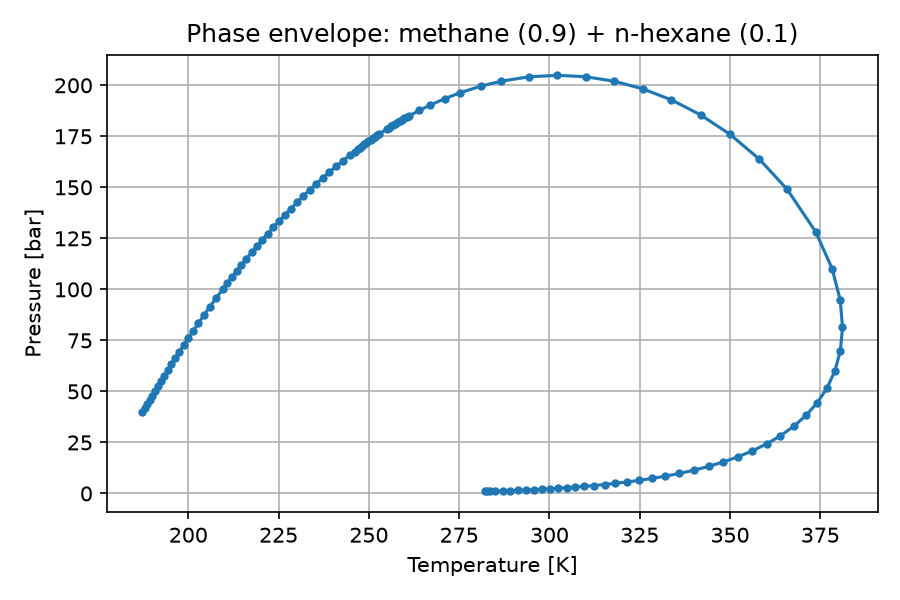
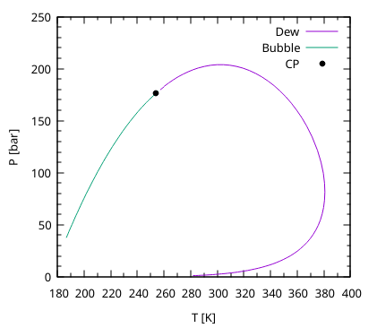

A phase envelope is the set of conditions at which a feed of fixed composition first splits into two phases. Below the boundary the feed is a single phase; on the boundary a second phase appears with an infinitesimal amount; across it, two phases coexist with finite amounts.
Think of a fixed-composition mixture of methane and n-hexane. Lowering the pressure at constant temperature eventually makes the mixture split into a vapor and a liquid. The temperature and pressure at which that happens form the dew branch of the envelope. Raising the pressure instead makes the mixture split at the bubble branch. The two branches meet at the critical point, and together they form the closed curve that separates the single-phase region from the two-phase region.
Along the envelope, the incipient phase is in equilibrium with the bulk phase, so the isofugacity condition and the saturation sum condition hold at every point. The envelope is traced by a continuation method: a predictor estimates the next point from the local tangent, and a corrector solves the saturation equations at the new condition. Reusing the previous point as the initial guess is what makes tracing a branch cheap and robust compared with solving each point independently.
Isopleths are the same boundary viewed at constant global composition; they connect the bubble and dew branches through the critical point. The name comes from the Greek isopleth: a line of constant quantity.
In yaeos it is possible to calculate two-phase envelopes of different kinds.
The solver works with the logarithm of the composition ratios between the two phases and with and . Working in logarithms keeps the variables positive and keeps the Newton steps well scaled over many orders of magnitude. At each point it solves the isofugacity equations
together with the normalization of the incipient phase
and the specification of one variable. The phase
roots are selected from first_point%kind, which also decides which branch of
the envelope is followed.
pt_envelope_2phfunction pt_envelope_2ph( &
model, z, first_point, &
points, iterations, delta_0, specified_variable_0, &
solver, stop_conditions, maximum_pressure &
) result(envelopes)
| Argument | Meaning |
|---|---|
model |
ArModel used for the fugacity coefficients |
z |
Overall composition of the isopleth (mole fractions) |
first_point |
Converged saturation point that starts the trace |
points |
Maximum number of points, default 500 |
iterations |
Maximum Newton iterations per point, default 100 |
delta_0 |
Initial continuation step, default 0.01 |
specified_variable_0 |
Index of the initially specified variable |
iterations, solver, stop_conditions, maximum_pressure |
Accepted for compatibility but not used by the current implementation |
The current pt_envelope_2ph delegates the trace to the multiphase routine
pt_envelope with one main phase and forwards only points, delta_0,
and specified_variable_0. In particular, maximum_pressure does not limit
the trace; the internal limit of 2000 bar applies.
The first_point%kind field selects the branches to use:
kind |
Bulk phase root | Incipient phase root | Resulting branch |
|---|---|---|---|
"bubble" |
liquid | vapor | Bubble branch |
"dew" |
vapor | liquid | Dew branch |
"liquid-liquid" |
liquid | liquid | Liquid-liquid branch |
The trace continues from first_point and, when it reaches a critical point,
switches to the opposite branch. The kind of each saved point records which
branch it belongs to.
The continuation variable is adaptive: the solver picks the variable with the
largest sensitivity at each step, and switches away from pressure or
temperature near a critical point. specified_variable_0 therefore sets the
starting specification rather than fixing the path.
program phase_envelope_example
use yaeos, only: pr, ArModel, EquilibriumState, PTEnvel2, PengRobinson76
use yaeos, only: saturation_temperature, pt_envelope_2ph
implicit none
class(ArModel), allocatable :: model
type(EquilibriumState) :: sat_point
type(PTEnvel2) :: envelope
real(pr) :: tc(2)
real(pr) :: pc(2)
real(pr) :: w(2)
real(pr) :: n(2)
integer :: i
tc = [190.564_pr, 507.6_pr]
pc = [45.99_pr, 30.25_pr]
w = [0.0115478_pr, 0.301261_pr]
model = PengRobinson76(tc, pc, w)
! Overall composition of the isopleth
n = [0.9_pr, 0.1_pr]
! Start from a dew point at low pressure
sat_point = saturation_temperature(model, n, P=1.0_pr, kind="dew", t0=150.0_pr)
if (sat_point%kind /= "dew") error stop "The seed point did not converge"
! Continue the two-phase boundary
envelope = pt_envelope_2ph(model, n, sat_point)
print *, "Number of envelope points: ", size(envelope%points)
if (allocated(envelope%cps)) print *, "Critical points found: ", size(envelope%cps)
do i = 2, size(envelope%points)
if (envelope%points(i)%kind /= envelope%points(i-1)%kind) &
print *, "Branch change at point ", i
end do
end program phase_envelope_example
With these parameters the calculation produces 122 points and one critical point. The first points are on the dew branch, the last ones on the bubble branch, and the critical point sits between them at about 253.8 K and 177.3 bar. The figure below shows the resulting pressure-temperature boundary:

Note the parameters: they illustrate the API, they are not a validated description of the methane/n-hexane system.
The result is a PTEnvel2 with two arrays:
| Field | Meaning |
|---|---|
points |
Converged saturation states, in continuation order |
cps |
Critical points detected along the branch (T, P) |
Each entry of points is an EquilibriumState with kind ("bubble",
"dew", or "liquid-liquid"), T, P, x, y, and beta. In the
current implementation x is always the bulk phase (it equals the feed z)
and y is always the incipient phase. For a dew point this is the opposite
of the saturation_temperature/saturation_pressure convention, where
x holds the incipient liquid. beta holds the fraction of the bulk phase
(1 on the boundary), and Vx, Vy, and iters are not filled in, so do not
read them.
The write command produces a pre-formatted, sectioned file:
# PTEnvel2
# kind of sat point
kind T P beta [phase-x composition vector] [phase-y composition vector]
# other kind of sat point
kind T P beta [phase-x composition vector] [phase-y composition vector]
# Critical
T P
The current writer emits every point except the last one, so the file
contains one row fewer than size(envelope%points). The beta column is
present in the data rows and precedes the composition vectors.
Which when plotted with gnuplot with:
plot "outfile" \
index "dew" u 2:3 w l title "Dew", \
"" index "bubble" u 2:3 w l t "Bubble", \
"" index "Critical" u 1:2 w p pt 7 lc rgb "black" t "CP"
Gives the following plot:

| Routine | Boundary traced | Fixed quantity |
|---|---|---|
| pt_envelope_2ph | P-T at constant composition | Composition |
| px_envelope_2ph | P-x at constant temperature | Temperature and a feed/injection pair |
| tx_envelope_2ph | T-x at constant pressure | Pressure and a feed/injection pair |
| pt_envelope_3ph | P-T for a three-phase line | Composition and initial phase compositions |
The P-x and T-x routines take two compositions, z0 (the main phase) and
z_injection (the injected fluid), plus a mixing parameter alpha0. They are
useful for injection and leaching processes, where the composition of one
phase changes along the path.
y0 and pressure or
temperature as the initial guess is usually cheaper and more stable.cps. If the trace crosses a critical
point without the sign change being detected, the branch change is missed.
Compare size(cps) with the number of branch changes you expect.example/basics/4_phase_envelope.f90 for a complete runnable program,
including how to write the envelope to a file.